example General demonstration of the OpenSeismoMatlab capabilities
This is to demonstrate the capabilities of OpenSeismoMatlab and also to verify that OpenSeismoMatlab works properly for all of its possible options and types of application, and yields meaningful results. All capabilities of OpenSeismoMatlab are tested in this example
Contents
- Load earthquake data
- Time histories without baseline correction
- Time histories with baseline correction
- Resample acceleration time history from 0.02 sec to 0.01 sec.
- PGA
- PGV
- PGD
- Total cumulative energy, Arias intensity and significant duration
- Pulse decomposition
- Linear elastic response spectra and pseudospectra
- Rigid plastic sliding displacement response spectra
- Constant ductility response spectra and pseudospectra
- Constant strength response spectra
- Fourier amplitude spectrum and mean period
- High pass Butterworth filter
- Low pass Butterworth filter
- Incremental dynamic analysis
- Effective peak ground acceleration
- Spectral intensity according to Housner (1952)
- Spectral intensity according to Nau & Hall (1984)
- Copyright
Load earthquake data
Earthquake acceleration time history of the El Centro earthquake will be used (El Centro, 1940, El Centro Terminal Substation Building)
fid=fopen('elcentro_NS_trunc.dat','r'); text=textscan(fid,'%f %f'); fclose(fid); t=text{1,1}; dt=t(2)-t(1); xgtt=text{1,2};
Time histories without baseline correction
sw='timehist';
baselineSw=false;
S1=OpenSeismoMatlab(dt,xgtt,sw,baselineSw);
figure() plot(S1.time,S1.disp,'k','LineWidth',1) drawnow; pause(0.1)
figure() plot(S1.time,S1.vel,'k','LineWidth',1) drawnow; pause(0.1)
figure() plot(S1.time,S1.acc,'k','LineWidth',1) drawnow; pause(0.1)
Time histories with baseline correction
sw='timehist';
baselineSw=true;
S2=OpenSeismoMatlab(dt,xgtt,sw,baselineSw);
figure() plot(S2.time,S2.disp,'k','LineWidth',1) drawnow; pause(0.1)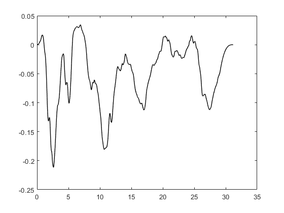
figure() plot(S2.time,S2.vel,'k','LineWidth',1) drawnow; pause(0.1)
figure() plot(S2.time,S2.acc,'k','LineWidth',1) drawnow; pause(0.1)
Resample acceleration time history from 0.02 sec to 0.01 sec.
sw='sincresample';
dti=0.01;
S3=OpenSeismoMatlab(dt,xgtt,sw,dti);
figure() plot(S3.time,S3.acc,'k','LineWidth',1) drawnow; pause(0.1)
PGA
sw='pga';
S4=OpenSeismoMatlab(dt,xgtt,sw);
S4.PGA
ans =
3.1276242
PGV
sw='pgv';
S5=OpenSeismoMatlab(dt,xgtt,sw);
S5.PGV
ans =
0.360920691
PGD
sw='pgd';
S6=OpenSeismoMatlab(dt,xgtt,sw);
S6.PGD
ans =
0.211893410160001
Total cumulative energy, Arias intensity and significant duration
sw='arias';
S7=OpenSeismoMatlab(dt,xgtt,sw);
S7.Ecum
ans =
11.251388628142
figure() plot(S7.time,S7.EcumTH,'k','LineWidth',1) drawnow; pause(0.1)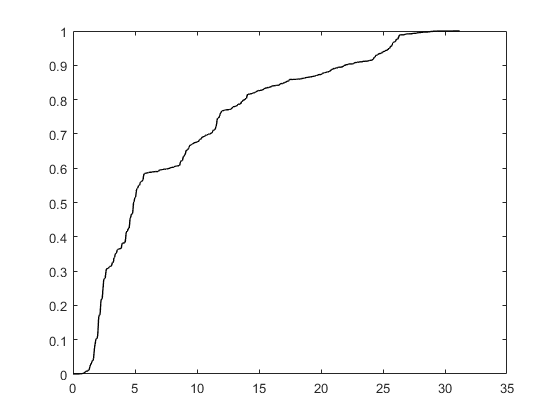
S7.t_5_95
ans =
1.68 25.5
S7.Td_5_95
ans =
23.84
S7.t_5_75
ans =
1.68 11.8
S7.Td_5_75
ans =
10.14
S7.arias
ans =
1.80159428424335
Pulse decomposition
xgt=S1.vel;
sw='pulsedecomp';
S8=OpenSeismoMatlab(dt,xgt,sw);
figure() plot(S8.time,S8.pulseTH,'k','LineWidth',1) drawnow; pause(0.1)
figure() plot(S8.time,S8.resTH,'k','LineWidth',1) drawnow; pause(0.1)
S8.Tp
ans =
3.304
S8.wavScale
ans = 118
S8.wavCoefs
ans =
1.71247132221248
Linear elastic response spectra and pseudospectra
sw='elrs';
ksi=0.05;
T=0.04:0.02:1;
S9=OpenSeismoMatlab(dt,xgtt,sw,T,ksi);
figure() plot(S9.Period,S9.PSa,'k','LineWidth',1) drawnow; pause(0.1)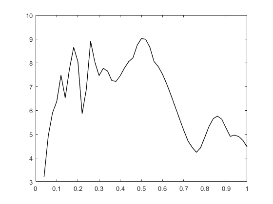
figure() plot(S9.Period,S9.PSv,'k','LineWidth',1) drawnow; pause(0.1)
figure() plot(S9.Period,S9.Sd,'k','LineWidth',1) drawnow; pause(0.1)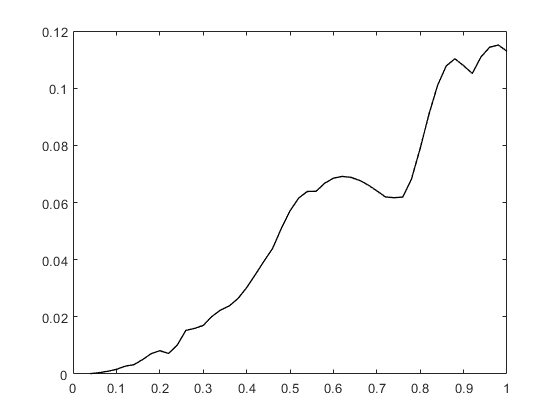
figure() plot(S9.Period,S9.Sv,'k','LineWidth',1) drawnow; pause(0.1)
figure() plot(S9.Period,S9.Sa,'k','LineWidth',1) drawnow; pause(0.1)
figure() plot(S9.Period,S9.Siev,'k','LineWidth',1) drawnow; pause(0.1)
S9.PredPSa
ans =
9.01181525615902
S9.PredPeriod
ans =
0.5
Rigid plastic sliding displacement response spectra
sw='rpsrs';
S10=OpenSeismoMatlab(dt,xgtt,sw);
figure() plot(S10.CF,S10.RPSSd,'k','LineWidth',1) drawnow; pause(0.1)
figure() plot(S10.CF,S10.RPSSv,'k','LineWidth',1) drawnow; pause(0.1)
figure() plot(S10.CF,S10.RPSSa,'k','LineWidth',1) drawnow; pause(0.1)
Constant ductility response spectra and pseudospectra
sw='cdrs';
ksi=0.05;
T=0.04:0.02:1;
mu=2;
S11=OpenSeismoMatlab(dt,xgtt,sw,T,ksi,mu);
figure() plot(S11.Period,S11.CDPSa,'k','LineWidth',1) drawnow; pause(0.1)
figure() plot(S11.Period,S11.CDPSv,'k','LineWidth',1) drawnow; pause(0.1)
figure() plot(S11.Period,S11.CDSd,'k','LineWidth',1) drawnow; pause(0.1)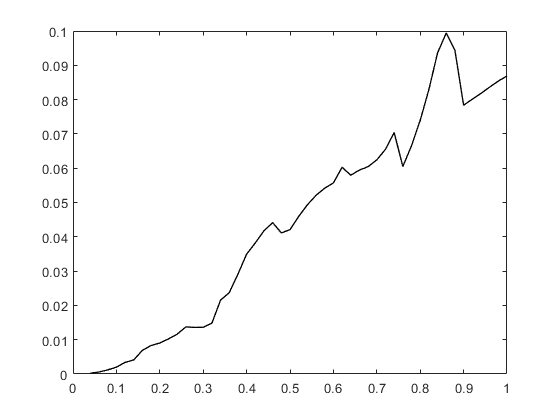
figure() plot(S11.Period,S11.CDSv,'k','LineWidth',1) drawnow; pause(0.1)
figure() plot(S11.Period,S11.CDSa,'k','LineWidth',1) drawnow; pause(0.1)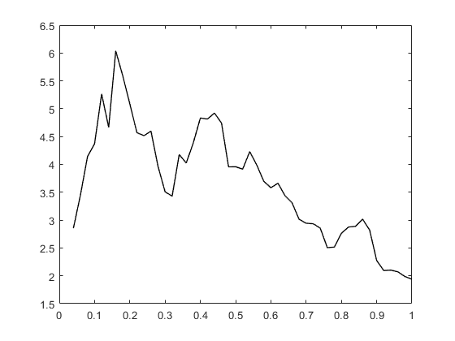
figure() plot(S11.Period,S11.fyK,'k','LineWidth',1) drawnow; pause(0.1)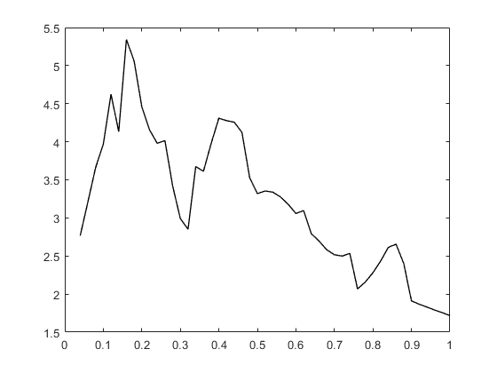
figure() plot(S11.Period,S11.muK,'k','LineWidth',1) drawnow; pause(0.1)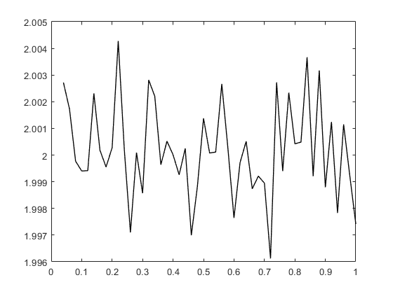
figure() plot(S11.Period,S11.iterK,'k','LineWidth',1) drawnow; pause(0.1)
Constant strength response spectra
sw='csrs';
ksi=0.05;
T=0.04:0.02:1;
fyR=0.1;
S12=OpenSeismoMatlab(dt,xgtt,sw,T,ksi,fyR);
figure() plot(S12.Period,S12.CSSmu,'k','LineWidth',1) drawnow; pause(0.1)
figure() plot(S12.Period,S12.CSSd,'k','LineWidth',1) drawnow; pause(0.1)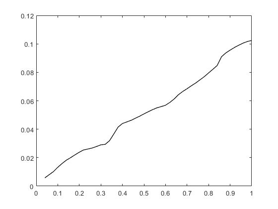
figure() plot(S12.Period,S12.CSSv,'k','LineWidth',1) drawnow; pause(0.1)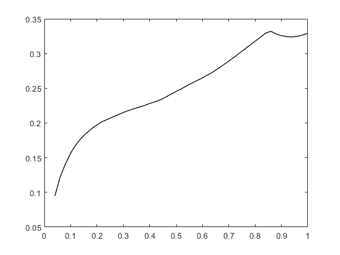
figure() plot(S12.Period,S12.CSSa,'k','LineWidth',1) drawnow; pause(0.1)
figure() plot(S12.Period,S12.CSSey,'k','LineWidth',1) drawnow; pause(0.1)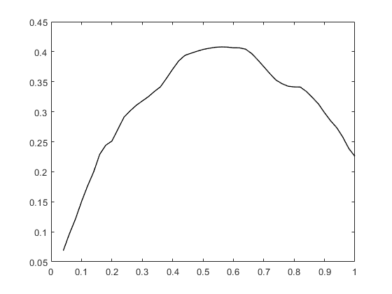
figure() plot(S12.Period,S12.CSSed,'k','LineWidth',1) drawnow; pause(0.1)
Fourier amplitude spectrum and mean period
sw='fas';
S13=OpenSeismoMatlab(dt,xgtt,sw);
figure() plot(S13.freq,S13.FAS,'k','LineWidth',1) drawnow; pause(0.1)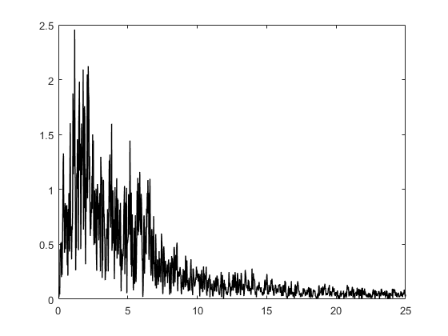
S13.Tm
ans =
0.514862185011529
S13.Fm
ans =
3.55564226051675
High pass Butterworth filter
sw='butterworthhigh';
bOrder=4;
flc=0.1;
S14=OpenSeismoMatlab(dt,xgtt,sw,bOrder,flc);
figure() plot(S14.time,S14.acc,'k','LineWidth',1) drawnow; pause(0.1)
Low pass Butterworth filter
sw='butterworthlow';
bOrder=4;
fhc=10;
S15=OpenSeismoMatlab(dt,xgtt,sw,bOrder,fhc);
figure() plot(S15.time,S15.acc,'k','LineWidth',1) drawnow; pause(0.1)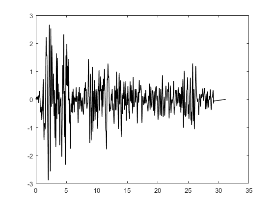
Incremental dynamic analysis
sw='ida';
S16=OpenSeismoMatlab(dt,xgtt,sw);
figure() plot(S16.DM,S16.IM,'k','LineWidth',1) drawnow; pause(0.1)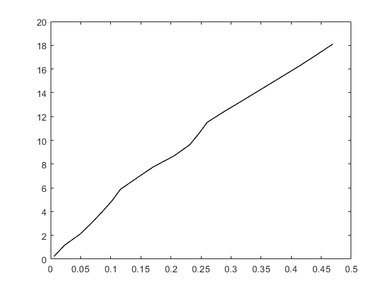
Effective peak ground acceleration
sw='epga';
S17=OpenSeismoMatlab(dt,xgtt,sw);
S17.EPGA
ans =
3.09546779631066
Spectral intensity according to Housner (1952)
sw='sih1952';
S18=OpenSeismoMatlab(dt,xgtt,sw);
S18.SI
ans =
1.24373311662318
Spectral intensity according to Nau & Hall (1984)
sw='sinh1984';
S19=OpenSeismoMatlab(dt,xgtt,sw);
S19.SI
ans =
0.530561283239986
Copyright
Copyright (c) 2018-2023 by George Papazafeiropoulos
- Major, Infrastructure Engineer, Hellenic Air Force
- Civil Engineer, M.Sc., Ph.D.
- Email: gpapazafeiropoulos@yahoo.gr